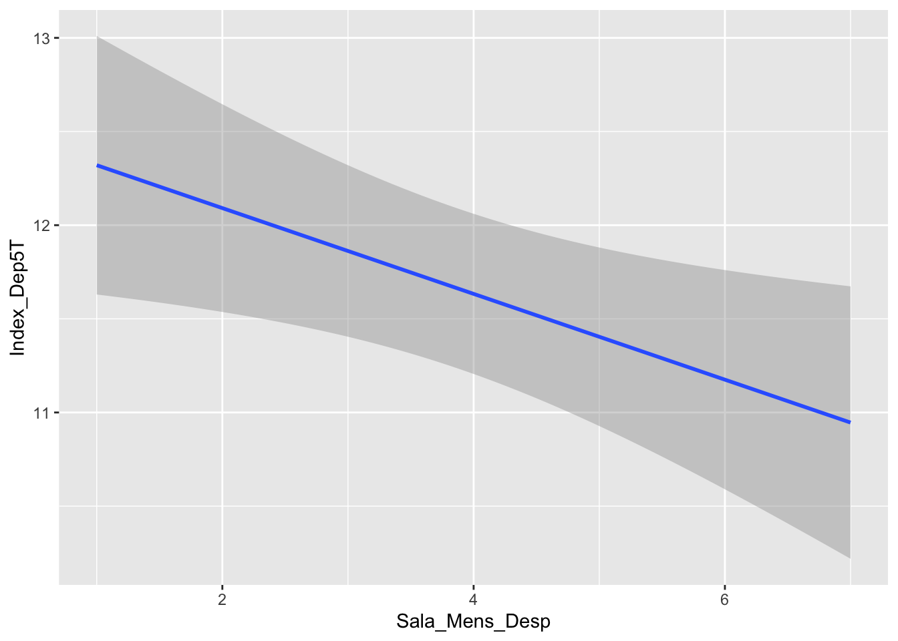
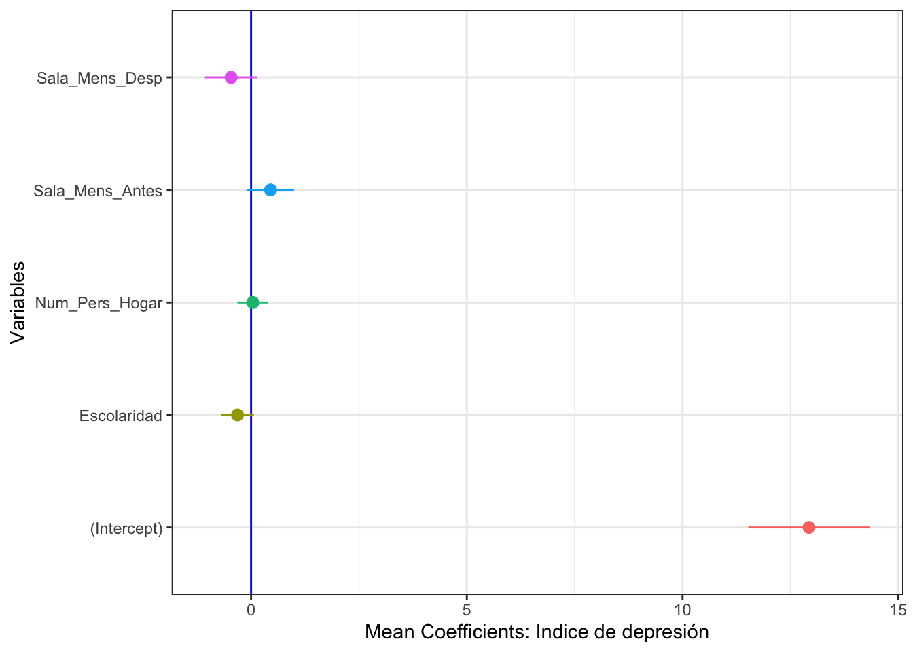

Capítulo 20 Selección de Modelos con el Criterio de Akaike
20.1 Datos, hipótesis y modelos
Selección de modelos. Enfoque que compara varias hipótesis (modelos) a la vez y las clasifica por su apoyo relativo en los datos, en lugar de rechazar una sola hipótesis nula. Se basa en el principio de parsimonia: entre modelos con ajuste similar, se prefiere el más sencillo. El AIC formaliza esto premiando el buen ajuste y penalizando la complejidad (el número de parámetros).
La ciencia es un proceso para aprender sobre nuestro entorno, en el que múltiples ideas, a veces contradictorias, tratan de explicar cómo funciona el mundo. Típicamente uno comienza con una idea, una expresión verbal, que se desarrolla como una hipótesis. Luego es necesario expresar esa hipótesis con una ecuación matemática, o sea un modelo. El concepto de modelo en la ciencia es que explica un proceso simplificado (por ejemplo, biológico) que da una apreciación sobre los factores responsables del patrón observado. Por consiguiente, cuán bien los datos se ajustan al modelo también refleja el apoyo a la hipótesis.
Hay dos acercamientos principales para hacer inferencia. El método tradicional consiste en determinar si la hipótesis nula puede ser rechazada con base en un conjunto de datos. La hipótesis nula se rechaza cuando una prueba estadística resulta en un valor por debajo de un umbral, típicamente p < 0.05. Para muchos, rechazar la hipótesis nula es evidencia de que la hipótesis alterna es CORRECTA. Aunque parezca un juego de palabras, en realidad solo estamos diciendo que no hay apoyo para la hipótesis nula. La razón es que no estamos probando si la hipótesis alterna es verídica. Es importante recordar que la descripción de la hipótesis alterna puede ser equivocada.
El acercamiento alterno, la selección de modelos, ofrece una alternativa en la que uno compara múltiples hipótesis y produce su inferencia a partir de estos resultados. La selección de modelos se basa en la teoría de la verosimilitud (likelihood). La ventaja es que el investigador no está limitado a evaluar un solo modelo con un umbral arbitrario (el modelo nulo con un valor de p < 0.05). Los modelos pueden ser comparados unos con otros y organizados por su peso (weight, o sea el apoyo estadístico), ofreciendo una medida relativa de apoyo frente a las otras hipótesis. En caso de que haya modelos con el mismo apoyo, uno puede seleccionar los mejores modelos y calcular un modelo promedio.
20.2 ¿Cómo funciona la selección de modelos?
El acercamiento filosófico de selección de modelos es evaluar múltiples hipótesis y evaluar la evidencia que apoya estas. Por consecuencia el primer paso es articular un grupo de hipótesis razonables. Segundo, cada hipótesis tiene que ser adaptada a los datos observados con una función matemática. El tercer paso es seleccionar un método de selección de modelos y comparar los resultados.
20.3 \(R^2\)
El acercamiento tradicional en la literatura es el \(R^2\), o coeficiente de determinación, que es un método sencillo de selección de modelos. Mientras mayor es el valor de \(R^2\), mayor es el ajuste (fit) del modelo. Este acercamiento no toma en cuenta la complejidad de los modelos y tiende a seleccionar siempre los modelos más complejos. La razón es que, al añadir más variables a un modelo (por ejemplo, en una regresión lineal múltiple), cada variable nueva explica en parte la variación; aunque explique muy poco, como explica algo, aumenta el \(R^2\). Por consiguiente, no toma en cuenta el concepto de parsimonia, según el cual deberíamos seleccionar el modelo más sencillo tomando en cuenta tanto el ajuste como la complejidad del modelo. Un buen método de selección de modelos debería tomar en cuenta la complejidad y penalizar los modelos excesivamente complejos.
20.3.1 Ejemplo de Construcción de selección por \(R^2\)
Seleccionamos los datos del módulo de regresión múltiple sobre el Biomass Index (BMI) y cómo está correlacionado con la edad, el nivel de colesterol y la glucosa en la sangre.
library(readxl)
reg.multiple <- read_excel("Data_files_csv/mod_empiricos.xlsx", sheet = "bmi")
# para ver las primeras seis filas de datos
head(reg.multiple)| BMI | Age | Cholesterol | Glucose |
|---|---|---|---|
| 19.3 | 21 | 178 | 95 |
| 24.5 | 57 | 250 | 98 |
| 24.7 | 46 | 176 | 102 |
| 47.9 | 47 | 171 | 105 |
| 44.2 | 61 | 222 | 101 |
| 29.9 | 74 | 156 | 72 |
20.3.1.1 Instalar los siguientes paquetes si no los tienen instalados
if (!require("pacman")) install.packages("pacman")
pacman::p_load("MuMIn", "formattable")Se construye un modelo con todos los parámetros. Vemos que el \(R^2= 0.0785\).
library(car)
library(sjPlot)
model <- lm(BMI ~ Age + Cholesterol + Glucose, data = reg.multiple)
tab_model(model)| BMI | |||
|---|---|---|---|
| Predictors | Estimates | CI | p |
| (Intercept) | 16.82 | 6.65 – 26.98 | 0.002 |
| Age | 0.04 | -0.07 – 0.15 | 0.469 |
| Cholesterol | 0.05 | -0.00 – 0.10 | 0.058 |
| Glucose | 0.02 | -0.01 – 0.05 | 0.192 |
| Observations | 58 | ||
| R2 / R2 adjusted | 0.127 / 0.079 | ||
Ahora evaluamos todas las posibles combinaciones de modelos. Considera la columna de \(R^2\) y los valores para cada modelo. Lo que se observa es que el modelo con más variables tiene el \(R^2\) más alto, seguido por los modelos con dos variables. La pregunta principal es: ¿un modelo con más variables y un \(R^2=0.127\) es significativamente mejor que un modelo de 2 variables con un \(R^2=0.1185\)? Usando el método tradicional no hay un mecanismo para seleccionar y evaluar cuál de los modelos es el mejor tomando en cuenta la complejidad del modelo. NOTA: NA en la tabla quiere decir que esa variable no está incluida en el modelo.
library(MASS)
library(MuMIn)
options(na.action = "na.fail")
model2=lm(BMI ~ Age + Cholesterol + Glucose, data = reg.multiple) # El Modelo más completo
#model2
#summary(model2)
ALL_models=dredge(model2, extra="R^2") # Evaluación de todas las combinaciones/alternativas (modelos)
ALL_models| (Intercept) | Age | Cholesterol | Glucose | R^2 | df | logLik | AICc | delta | weight |
|---|---|---|---|---|---|---|---|---|---|
| 18 | 0.051 | 0.0225 | 0.118 | 4 | -188 | 384 | 0 | 0.260568273009652 | |
| 20 | 0.0541 | 0.079 | 3 | -189 | 384 | 0.228 | 0.232440704832662 | ||
| 18 | 0.0602 | 0.0495 | 0.0988 | 4 | -188 | 385 | 1.28 | 0.137477125492082 | |
| 16.8 | 0.041 | 0.0482 | 0.0197 | 0.127 | 5 | -187 | 386 | 1.83 | 0.104272275091639 |
| 27.2 | 0.025 | 0.0489 | 3 | -190 | 386 | 2.09 | 0.0914445078342029 | ||
| 30.1 | 0 | 2 | -191 | 387 | 2.78 | 0.0650112148934847 | |||
| 26.3 | 0.0786 | 0.0347 | 3 | -190 | 387 | 2.95 | 0.0595136642506859 | ||
| 24.9 | 0.0578 | 0.0209 | 0.0664 | 4 | -189 | 387 | 3.33 | 0.0492722345955916 |
library(formattable)
formattable(ALL_models, digits=5, format="html")| (Intercept) | Age | Cholesterol | Glucose | R^2 | df | logLik | AICc | delta | weight | |
|---|---|---|---|---|---|---|---|---|---|---|
| 7 | 17.952 | NA | 0.050975 | 0.022541 | 0.118463 | 4 | -187.63 | 384.01 | 0.00000 | 0.260568 |
| 3 | 20.012 | NA | 0.054149 | NA | 0.079020 | 3 | -188.90 | 384.24 | 0.22846 | 0.232441 |
| 4 | 17.967 | 0.060198 | 0.049483 | NA | 0.098811 | 4 | -188.27 | 385.29 | 1.27881 | 0.137477 |
| 8 | 16.815 | 0.041027 | 0.048190 | 0.019738 | 0.127045 | 5 | -187.34 | 385.84 | 1.83172 | 0.104272 |
| 5 | 27.167 | NA | NA | 0.025015 | 0.048912 | 3 | -189.83 | 386.10 | 2.09427 | 0.091445 |
| 1 | 30.108 | NA | NA | NA | 0.000000 | 2 | -191.28 | 386.78 | 2.77661 | 0.065011 |
| 2 | 26.304 | 0.078579 | NA | NA | 0.034720 | 3 | -190.26 | 386.96 | 2.95332 | 0.059514 |
| 6 | 24.855 | 0.057793 | NA | 0.020876 | 0.066354 | 4 | -189.29 | 387.34 | 3.33101 | 0.049272 |
20.4 Pruebas de modelos nulos
La prueba de verosimilitud (PV) es uno de los métodos más utilizados en las pruebas de hipótesis nula. La PV compara pares de modelos: cuando la verosimilitud de un modelo más complejo es significativamente mayor que la del modelo sencillo, se acepta el modelo complejo, y viceversa. Típicamente se usa como índice el chi-cuadrado, \(\chi^2\). En este caso, al contrario del \(R^2\), seleccionar un modelo más complejo cuando tiene una verosimilitud mayor sí tiene sentido, aunque sea más complejo. La desventaja es que las pruebas no son independientes y, por consiguiente, inflan el error de tipo I (o sea, el \(\alpha\)). Otro punto importante es que la complejidad se añade de forma sucesiva a los modelos; por consiguiente, las comparaciones deben hacerse entre modelos anidados (jerárquicos).
Tabla de métodos comunes para selección de modelos
En la siguiente tabla mencionamos cinco métodos de selección de modelos. El primero en desarrollarse fue el Criterio de Información de Akaike (AIC), y es el más utilizado por ser el más conocido. Pero hay muchos otros que no se mencionan aquí, como el Factor de Bayes y el \(C_p\) de Mallows. Puedes encontrar más información en el siguiente enlace:
El Criterio de Información de Akaike (AIC) fue propuesto por el estadístico japonés Hirotugu Akaike en 1973. Conecta la selección de modelos con la información de Kullback-Leibler (Solomon Kullback y Richard Leibler, 1951), una medida de cuánta información se “pierde” al aproximar la realidad con un modelo. El criterio de Schwarz (BIC) lo propuso Gideon Schwarz en 1978.
https://en.wikipedia.org/wiki/Model_selection#Criteria
| Selección de modelos | Fórmula | Criterio de selección |
|---|---|---|
| Verosimilitud | \(-2\left\{\ln\left[L(\theta_p \mid y)\right]-\ln\left[L(\theta_{p+q} \mid y)\right]\right\}\) | Ajuste |
| \(AIC\) | \(AIC=-2\ln\left[L(\theta_p \mid y)\right]+2p\) | Ajuste y complejidad |
| \(AIC_c\) | \(AIC_c=-2\ln\left[L(\theta_p \mid y)\right]+2p\left(\frac{n}{n-p-1}\right)\) | Ajuste y complejidad, con corrección para tamaño de muestra pequeño |
| \(SC\) (Schwarz) | \(SC=-2\ln\left[L(\theta_p \mid y)\right]+p\cdot\ln\left(n\right)\) | Ajuste, complejidad y tamaño de muestra |
| \(R_{adj}^2\) | \(R_{adj}^2=1-\frac{RSS/(n-p-1)}{\frac{\sum_{i=1}^n\left(y_i-\overline{y}\right)^2}{n-1}}\) | Ajuste |
Las ideas y conceptos mencionados siguen en parte a Johnson y Omland (2004).
En el AIC, \(L(\theta_p \mid y)\) es la verosimilitud del modelo dados los datos, \(p\) es el número de parámetros y \(n\) el tamaño de muestra. El término \(2p\) penaliza la complejidad. \(AIC_c\) añade una corrección para muestras pequeñas y se recomienda cuando \(n/p < 40\). Menor AIC = mejor modelo.
20.5 ¿Cuál método es más apropiado?
Los métodos que maximizan solamente la verosimilitud tienen limitaciones respecto a la parsimonia del modelo. En múltiples áreas de estudio se están moviendo hacia métodos que no incluyen solamente la verosimilitud, sino también la complejidad de los modelos. En general, el método que más se usa es el AIC, en parte porque está fundado en el Criterio de Información de Kullback-Leibler; pero hay quienes prefieren, por ejemplo, el criterio de información de Schwarz, debido a que este selecciona modelos más parsimoniosos. Nota que este último toma en cuenta no solamente el ajuste y la complejidad, sino también el tamaño de muestra. El Schwarz es conocido también como el Bayesian Information Criterion (BIC), aunque no tiene nada de bayesiano en el método de análisis. Para aclarar, el BIC no usa información previa para hacer los cálculos, y se puede usar tanto con análisis tradicional como bayesiano.
20.6 Estimación de parámetros y múltiples modelos
En muchos estudios el objetivo principal es estimar los parámetros para poder inferir algún proceso biológico o comportamiento humano. Por ejemplo, ¿cuál es la dosis apropiada de algún antibiótico para reducir el crecimiento de bacterias y el tiempo del tratamiento?. Cuando hay un buen apoyo para un modelo específico, se pueden utilizar los estimados de los parámetros obtenidos por verosimilitud. Pero de vez en cuando hay apoyo similar para múltiples modelos, lo que dificulta seleccionar un modelo que sea mejor que otro. En este caso, si hay más de un modelo, se utiliza el promedio de los modelos. Los estimados de los parámetros de un modelo promedio son robustos en dos aspectos, 1) reduce el sesgo de seleccionar modelos y 2) toma en cuenta la incertidumbre en los modelos.
20.7 Selección de Modelos entre muchos
¿Cómo seleccionar el mejor modelo entre muchos? Si, por ejemplo, usamos el índice de Akaike (AIC), cada modelo se ajusta a los datos y se calcula su índice \(AIC_i\). Luego se calcula la diferencia entre el AIC de cada modelo y el del mejor modelo, \(\Delta_i = AIC_i - AIC_{\min}\). El mejor modelo en el conjunto evaluado es el modelo con un AIC más pequeño, \(AIC_{\min}\).
\[\Delta _i=AIC_i-AIC_{\min}\]
Regla práctica para \(\Delta_i\): un \(\Delta_i\) entre 0 y 2 indica que el modelo tiene un apoyo esencialmente igual al del mejor modelo; entre 4 y 7, apoyo considerablemente menor; y mayor de 10, prácticamente ningún apoyo.
La verosimilitud (likelihood) de un modelo, \(g_i\), dado los datos, \(y\), es calculado de la siguiente forma.
\(L(g_i \mid y)=\exp\left(-\frac{\Delta_i}{2}\right)\),
Comparar pares de modelos, particularmente el mejor modelo y los otros, tiene un indice que se llama evidence ratio, ER y traducido aquí como la razón de evidencia.
\(ER=\frac{L(g_{mejor} \mid y)}{L(g_i \mid y)}\),
Los valores de verosimilitud se pueden normalizar para que la suma de los modelos sea 1.
\(W_i=\frac{\exp\left(-\frac{\Delta_i}{2}\right)}{\sum_{j=1}^R\exp\left(-\frac{\Delta_j}{2}\right)}\),
Este valor, conocido como el peso de Akaike (weight), puede interpretarse como la probabilidad de que el modelo \(i\) sea el mejor de los modelos evaluados.
20.8 Promediado de modelos (Model Averaging)
A veces no hay un único modelo con apoyo sustancial de los datos. Esto puede identificarse con ciertas condiciones; por ejemplo, si el peso del mejor modelo no es muy grande (\(w_{best}<0.9\)) o si la diferencia entre los modelos tiene un \(\Delta AIC\) menor de 2. En este caso se necesita calcular los promedios ponderados de los parámetros, \(\tilde{\theta}\).
\(\tilde{\theta}=\sum_{i=1}^Rw_i\tilde{\theta}_i\)
donde \(\tilde{\theta}_i\) es el estimado de \(\tilde{\theta}\) del modelo \(i\) del conjunto de mejores modelos. De esta forma, los parámetros del modelo están ponderados por su apoyo \(w_i\). Además, se puede calcular la varianza de los parámetros con la siguiente fórmula:
\(\hat{var}(\tilde{\theta})=\sum_{i=1}^Rw_i\left[\hat{var}\left(\tilde{\theta} \mid g_i\right)+ (\tilde{\theta}-\hat{\theta})^2 \right]\)
donde \(\hat{var}\left(\tilde{\theta} \mid g_i\right)\) es el estimado de la varianza de \(\theta\) del modelo \(i\). El estimador de varianza puede utilizarse para evaluar la precisión de los estimados del conjunto de modelos considerados. Esto permite generar intervalos de confianza de los parámetros que toman en consideración la incertidumbre de la selección de modelos.
hacer una lista de las condiciones para selección de modelos con su referencias
20.9 Inferencias de los modelos de selección
La selección de modelos es una herramienta para inferir procesos no observados a partir de datos que demuestran un patrón. Los datos que claramente apoyan una hipótesis entre muchas evaluadas permiten inferir los procesos que pudieron haber generado los datos observados.
20.10 Paso a Paso
20.10.1 Primer paso: Construcción de los modelos
El primer paso es construir los modelos que queremos comparar. Para facilitar el ejemplo usamos un modelo complejo y comparamos todas las diferentes alternativas. NOTA: este no es necesariamente el mejor acercamiento, ya que uno debería tener a priori una serie de modelos candidatos.
Los datos son para evaluar si hay un efecto sobre el nivel de ansiedad y depresión en la población de Puerto Rico luego del Huracán María. Los datos presentados son solamente parciales e incluyen solamente uno de los índices: el del nivel de depresión 5 o más semanas después del Huracán (Tremblay et al., sin publicar). La hipótesis es que algunos factores sociales y/o económicos influyen en el nivel de depresión de la gente.
Metadata:
Sexo, 1= Mujer; 2 = Hombres
Escolaridad: mientras mayor el número, más escolaridad tiene la persona
Num_Pers_Hogar: cantidad de personas que comparten el hogar familiar
Sala_Mens_Antes, El salario mensual antes del Huracán María, mayor el número mayor el salario
Sala_Mens_Desp, El salario mensual después del Huracán María, mayor el número mayor el salario
Index_Dep5T: un índice de depresión 5 o más semanas después del Huracán.
20.10.2 Limpiar los datos
El primer paso es remover a todos los participantes a los que les falta alguna información.
## [1] 4 7 5 3 2 1 620.10.3 Construcción del modelo
head(DFMaria_student)| ...1 | Sexo | Escolaridad | Num_Pers_Hogar | Sala_Mens_Antes | Sala_Mens_Desp | Index_Dep5T |
|---|---|---|---|---|---|---|
| 1 | 1 | 4 | 3 | 4 | 4 | 19 |
| 2 | 1 | 4 | 3 | 2 | 2 | 16 |
| 3 | 1 | 7 | 4 | 2 | 2 | 9 |
| 4 | 1 | 4 | 2 | 5 | 3 | 2 |
| 5 | 2 | 4 | 5 | 6 | 6 | 17 |
| 6 | 2 | 5 | 2 | 2 | 7 | 8 |
Huracan_Dep=lm(Index_Dep5T~factor(Sexo)+Escolaridad+Num_Pers_Hogar+
Sala_Mens_Antes+ Sala_Mens_Desp, data=DFMaria_student)
summary(Huracan_Dep)##
## Call:
## lm(formula = Index_Dep5T ~ factor(Sexo) + Escolaridad + Num_Pers_Hogar +
## Sala_Mens_Antes + Sala_Mens_Desp, data = DFMaria_student)
##
## Residuals:
## Min 1Q Median 3Q Max
## -14.1426 -3.8984 -0.3931 4.0240 20.6993
##
## Coefficients:
## Estimate Std. Error t value Pr(>|t|)
## (Intercept) 13.37228 0.86017 15.546 <2e-16 ***
## factor(Sexo)2 -0.71014 0.45979 -1.544 0.1228
## Escolaridad -0.34298 0.18922 -1.813 0.0702 .
## Num_Pers_Hogar 0.03879 0.17797 0.218 0.8275
## Sala_Mens_Antes 0.47255 0.27245 1.734 0.0831 .
## Sala_Mens_Desp -0.58913 0.27367 -2.153 0.0316 *
## ---
## Signif. codes: 0 '***' 0.001 '**' 0.01 '*' 0.05 '.' 0.1 ' ' 1
##
## Residual standard error: 6.872 on 995 degrees of freedom
## Multiple R-squared: 0.01324, Adjusted R-squared: 0.008285
## F-statistic: 2.671 on 5 and 995 DF, p-value: 0.02084
ggplot(DFMaria_student, aes(y=Index_Dep5T,x=Sala_Mens_Desp))+
geom_smooth(method = lm)
20.10.3.1 Observar el resultado del modelo lineal completo.
summary(Huracan_Dep)##
## Call:
## lm(formula = Index_Dep5T ~ factor(Sexo) + Escolaridad + Num_Pers_Hogar +
## Sala_Mens_Antes + Sala_Mens_Desp, data = DFMaria_student)
##
## Residuals:
## Min 1Q Median 3Q Max
## -14.1426 -3.8984 -0.3931 4.0240 20.6993
##
## Coefficients:
## Estimate Std. Error t value Pr(>|t|)
## (Intercept) 13.37228 0.86017 15.546 <2e-16 ***
## factor(Sexo)2 -0.71014 0.45979 -1.544 0.1228
## Escolaridad -0.34298 0.18922 -1.813 0.0702 .
## Num_Pers_Hogar 0.03879 0.17797 0.218 0.8275
## Sala_Mens_Antes 0.47255 0.27245 1.734 0.0831 .
## Sala_Mens_Desp -0.58913 0.27367 -2.153 0.0316 *
## ---
## Signif. codes: 0 '***' 0.001 '**' 0.01 '*' 0.05 '.' 0.1 ' ' 1
##
## Residual standard error: 6.872 on 995 degrees of freedom
## Multiple R-squared: 0.01324, Adjusted R-squared: 0.008285
## F-statistic: 2.671 on 5 and 995 DF, p-value: 0.0208420.10.3.2 Evaluar todos los modelos
Se ordenan los modelos comenzando con el mejor. Se resta el valor de AICc de cada modelo del AICc del mejor modelo; mientras menor es esa diferencia, mejor es el modelo. Los modelos que se aceptan son los que tienen un delta menor de 2.00 comparado con el mejor modelo, \(\Delta_i=AIC_i-AIC_{\min}\). En otras palabras, los modelos que difieren en más de 2.0 unidades de AICc no se aceptan como buenos modelos. En este caso, los seis primeros modelos son igual de buenos y no hay evidencia de que uno sea mejor que otro. Cuando hay más de un modelo, se tienen que calcular los promedios ponderados de los parámetros \(\beta_i\).
| AIC_BIC_delta | Interpretación |
|---|---|
| 0-2 | Poca evidencia que los modelos son diferentes |
| 2-4 | Evidencia que los modelos son diferentes |
| >4 | Mucha evidencia que los modelos son diferentes |
Con la función dredge del paquete MuMIn podemos evaluar todas las combinaciones de modelos.
dredge(modelo, rank = "AIC") (paquete MuMIn) — compara todas las combinaciones de predictoras.
- Qué hace: a partir de un modelo “completo”, ajusta todos los submodelos posibles y los ordena por AIC (o BIC).
-
Requisito: antes hay que fijar
options(na.action = "na.fail"). -
Cómo leer: cada fila es un modelo (los mejores arriba, con menor AICc); la columna
deltaes \(\Delta_i\) yweightes el peso de Akaike.
library(MASS)
library(MuMIn)
options(na.action = "na.fail")
Huracan_Dep=lm(Index_Dep5T~Escolaridad+Num_Pers_Hogar+
Sala_Mens_Antes+ Sala_Mens_Desp, data=DFMaria_student) # El Modelo más completo
#model2
#summary(model2)
ALL_models=dredge(Huracan_Dep, rank="AIC", extra = c(BIC, "R^2")) # Evaluación de todas las combinaciones/alternativas (modelos)
library(formattable)
formattable(ALL_models, digits=4, format="html")| (Intercept) | Escolaridad | Num_Pers_Hogar | Sala_Mens_Antes | Sala_Mens_Desp | BIC | R^2 | df | logLik | AIC | delta | weight | |
|---|---|---|---|---|---|---|---|---|---|---|---|---|
| 14 | 13.19 | -0.3027 | NA | 0.45991 | -0.6005 | 6730 | 1.082e-02 | 5 | -3348 | 6706 | 0.0000 | 0.189345 |
| 13 | 12.40 | NA | NA | 0.43763 | -0.6402 | 6726 | 8.232e-03 | 4 | -3349 | 6706 | 0.6199 | 0.138880 |
| 10 | 13.30 | -0.2866 | NA | NA | -0.1716 | 6726 | 7.985e-03 | 4 | -3349 | 6707 | 0.8694 | 0.122596 |
| 9 | 12.55 | NA | NA | NA | -0.2290 | 6722 | 5.655e-03 | 3 | -3350 | 6707 | 1.2183 | 0.102969 |
| 2 | 13.03 | -0.3999 | NA | NA | NA | 6722 | 5.229e-03 | 3 | -3351 | 6707 | 1.6469 | 0.083108 |
| 16 | 13.07 | -0.3014 | 0.04136 | 0.45627 | -0.6000 | 6737 | 1.088e-02 | 6 | -3348 | 6708 | 1.9458 | 0.071570 |
| 15 | 12.26 | NA | 0.05008 | 0.43335 | -0.6393 | 6733 | 8.311e-03 | 5 | -3349 | 6708 | 2.5406 | 0.053159 |
| 12 | 13.13 | -0.2849 | 0.05848 | NA | -0.1757 | 6733 | 8.093e-03 | 5 | -3349 | 6709 | 2.7609 | 0.047613 |
| 6 | 13.19 | -0.3395 | NA | -0.09285 | NA | 6728 | 6.046e-03 | 4 | -3350 | 6709 | 2.8240 | 0.046134 |
| 11 | 12.36 | NA | 0.06593 | NA | -0.2332 | 6728 | 5.791e-03 | 4 | -3350 | 6709 | 3.0807 | 0.040578 |
| 4 | 12.96 | -0.4003 | 0.02282 | NA | NA | 6729 | 5.245e-03 | 4 | -3351 | 6709 | 3.6302 | 0.030830 |
| 5 | 12.30 | NA | NA | -0.15932 | NA | 6725 | 2.758e-03 | 3 | -3352 | 6710 | 4.1302 | 0.024010 |
| 8 | 13.06 | -0.3381 | 0.04460 | -0.09625 | NA | 6735 | 6.108e-03 | 5 | -3350 | 6711 | 4.7613 | 0.017513 |
| 1 | 11.66 | NA | NA | NA | NA | 6720 | 0.000e+00 | 2 | -3353 | 6711 | 4.8945 | 0.016384 |
| 7 | 12.14 | NA | 0.05470 | -0.16313 | NA | 6731 | 2.851e-03 | 4 | -3352 | 6712 | 6.0361 | 0.009258 |
| 3 | 11.61 | NA | 0.01597 | NA | NA | 6727 | 8.130e-06 | 3 | -3353 | 6713 | 6.8864 | 0.006052 |
20.10.4 Seleccionar los modelos
Seleccionar los modelos que tienen un delta AICc menor de 2 y calcular el promedio de los coeficientes de esos modelos. Nota el conjunto de coeficientes bajo subset: estos son los coeficientes de las variables del conjunto de modelos que tienen un delta AICc menor de 2.
get.models(...) y model.avg(...) (paquete MuMIn) — promedio de modelos.
-
get.models(ALL_models, subset = delta < 2): extrae los mejores modelos (los que están a menos de 2 unidades de AIC del mejor). -
model.avg(...): promedia sus coeficientes, ponderados por el peso de Akaike, cuando ningún modelo domina claramente. - Cómo leer: los coeficientes bajo subset son el promedio de las variables presentes en el conjunto de mejores modelos.
# calculate the model average
model.avg(ALL_models, subset = delta < 2)##
## Call:
## model.avg(object = ALL_models, subset = delta < 2)
##
## Component models:
## '134' '34' '14' '4' '1' '1234'
##
## Coefficients:
## (Intercept) Escolaridad Sala_Mens_Antes Sala_Mens_Desp Num_Pers_Hogar
## full 12.93159 -0.2078493 0.2547956 -0.4095744 0.004178587
## subset 12.93159 -0.3155782 0.4515174 -0.4640050 0.041363512
# get the subset of the best models into a data frame
bestModels <- get.models(ALL_models, subset=delta<2)
bestModels <- model.avg(bestModels)
bestModels=summary(bestModels)
# bestModels$coefficients20.10.5 Extraer los parámetros del modelo usando las siguientes funciones
bestModelsResults=data.frame(bestModels$coefmat.subset)
names(bestModelsResults)## [1] "Estimate" "Std..Error" "Adjusted.SE" "z.value" "Pr...z.."
bestModelsResults| Estimate | Std..Error | Adjusted.SE | z.value | Pr...z.. |
|---|---|---|---|---|
| 12.9 | 0.703 | 0.704 | 18.4 | 0 |
| -0.316 | 0.189 | 0.19 | 1.67 | 0.0959 |
| 0.452 | 0.272 | 0.272 | 1.66 | 0.0974 |
| -0.464 | 0.303 | 0.303 | 1.53 | 0.126 |
| 0.0414 | 0.178 | 0.178 | 0.232 | 0.817 |
BMR=setNames(cbind(rownames(bestModelsResults), bestModelsResults, row.names = NULL),
c("Variables", "Coef_Estimate", "Std_Error", "AdjustedSE", "z_value", "p_value"))
BMR=as.data.frame(BMR)
#BMR
is.data.frame(BMR)## [1] TRUE20.10.6 Intervalos de Confianza
Los intervalos de confianza de los parámetros se extraen del modelo usando las siguientes funciones.
library(ggplot2)
library(coefplot)
# Calcular el intervalo de confianza de 2.5% y de 97.5%
BMR$LowerBound=BMR$Coef_Estimate-BMR$AdjustedSE*2
BMR$UpperBound=BMR$Coef_Estimate+BMR$AdjustedSE*2
BMR| Variables | Coef_Estimate | Std_Error | AdjustedSE | z_value | p_value | LowerBound | UpperBound |
|---|---|---|---|---|---|---|---|
| (Intercept) | 12.9 | 0.703 | 0.704 | 18.4 | 0 | 11.5 | 14.3 |
| Escolaridad | -0.316 | 0.189 | 0.19 | 1.67 | 0.0959 | -0.695 | 0.0635 |
| Sala_Mens_Antes | 0.452 | 0.272 | 0.272 | 1.66 | 0.0974 | -0.0934 | 0.996 |
| Sala_Mens_Desp | -0.464 | 0.303 | 0.303 | 1.53 | 0.126 | -1.07 | 0.143 |
| Num_Pers_Hogar | 0.0414 | 0.178 | 0.178 | 0.232 | 0.817 | -0.315 | 0.398 |
names(BMR)## [1] "Variables" "Coef_Estimate" "Std_Error" "AdjustedSE"
## [5] "z_value" "p_value" "LowerBound" "UpperBound"20.10.7 Visualizar los coeficientes con los intervalos de confianza
ggplot(BMR, mapping=aes(x=Variables, y = Coef_Estimate,
ymin = LowerBound, ymax = UpperBound, colour=Variables))+
geom_point()+
geom_hline(yintercept=0.0, colour="blue")+
coord_flip()+
geom_pointrange()+
xlab("Variables")+
ylab("Mean Coefficients: Indice de depresión")+
rlt_theme+
theme(legend.position="none")
ggsave("Indice_depresión.png")Referencias:
Johnson, J. B., K. S. Omland. 2004. Model selection in ecology and evolution. TRENDS in Ecology and Evolution. 19:101-108. doi: 10.1016/j.tree.2003.10.013.
“Activities reported in this website was supported by the National Institute of General Medical Sciences of the National Institutes of Health under Award Number R25GM121270. The content is solely the responsibility of the authors and does not necessarily represent the official views of the National Institutes of Health.”